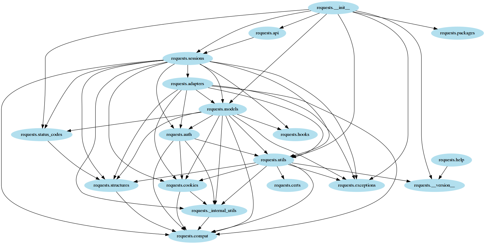

tutorial 1 - basics¶
This tutorial demonstrates how to use doit to create a simple computational pipeline.
The goal is to create a graph of python module’s imports in a package. graphviz’s dot tool will be used to generate the graph.
As an example, the requests package will be used. The result is the image below:
In the image an arrow represents an import from one module to another. For example in the left side of image you can see an arrow from requests.status_codes to requests.structures. This comes from the following line in status_code.py:
from .structures import LookupDict
Drawing an “import” dependency graph can be very useful in understanding how the code in a package is organized. It may also help you identify potential problems like circular imports.
There are three main steps to generate this graph:
read each python module and list its imports
generate a dot (text format) file representing the graph
generate an image (PNG) from the dot file
setup¶
required python packages¶
$ pip install doit pygraphviz import_deps
Note that on some linux systems it is necessary to install the system package graphviz-dev first.
sample project¶
First create a directory that will contain the projects to be analyzed.
$ mkdir projects
Then clone the requests project
$ cd projects
$ git clone git@github.com:requests/requests.git
$ cd ..
finding a module’s import¶
Using import_deps list all (intra-packages) imports from a module:
For example:
$ python -m import_deps projects/requests/requests/models.py
requests._internal_utils
requests.auth
requests.compat
requests.cookies
requests.exceptions
requests.hooks
requests.status_codes
requests.structures
requests.utils
The output contains one imported module per line.
doit task¶
On the next step we are going to wrap the above script in a doit task.
In doit tasks are defined in a plain python module, by default called dodo.py.
For example, a trivial task to execute the script above and save its output into a file would be:
def task_imports():
return {
'actions': ['python -m import_deps '
'projects/requests/requests/models.py > requests.models.deps'],
}
In this module you write functions that are task-creators,
the role of which is not to execute tasks but to return tasks’ metadata.
task-creators are any function whose name starts with task_.
A task name is taken from the function name, so
in this case the task is called imports.
The most important Task metadata is actions, which defines what will be done when a task is executed.
Note that actions is a list where its element are strings to be interpreted as shell commands.
task execution¶
doit comes with a command line tool to act upon the set of tasks defined in a specific file. The default file is dodo.py in the current directory. With no argument it executes all tasks found in it.
$ doit
. imports
The output reports that the imports task was executed.
You can check that a file requests.models.deps was created with
a list of modules imported by requests.models.
incremental computation¶
One of the main purposes of doit is to make use
of up-to-date checks to decide if tasks need to be executed or not.
In our case, as long as the input file is not modified we are certain that the same output would be generated…
When dealing with files, task’s metadata file_dep and targets can be used:
def task_imports():
"""find imports from a python module"""
return {
'file_dep': ['projects/requests/requests/models.py'],
'targets': ['requests.models.deps'],
'actions': ['python -m import_deps %(dependencies)s > %(targets)s'],
}
Note how actions can make use of variable substitution for
%(dependencies)s and %(targets)s.
Now let’s execute it again:
$ doit
. imports
And then, a second time:
$ doit
-- imports
Note that the second time there is a -- instead of . preceding the task name.
This means that the task was not executed, doit understood that
the task output would be the same as previously generated,
so it does not execute the task again.
Warning
When doit loads a dodo.py file it executes all task-creator functions in order to generate all tasks metadata.
A task’s action is only executed if the task is selected to run and not up-to-date.
Expensive computation should always be done on task’s action
and never on the body of a task-creator function.
rules for up-to-date checks on files¶
file_dep¶
doit uses the md5 of file_dep to determine if a dependency has changed.
$ touch projects/requests/requests/models.py
$ doit
-- imports
$ echo "# comment" >> projects/requests/requests/models.py
$ doit
. imports
Note that simply changing a file timestamp does not trigger a new execution.
targets¶
For targets, the only verification that is made is whether the file exists or not.
So if a target is removed it will be re-created even if the dependencies remain unmodified.
$ rm requests.models.deps
$ doit
. imports
graphviz dot¶
On the next step we will create a graphviz’s dot file.
dot is a language to describe graphs.
The code below defines a python function to read a file containing
import dependencies (as generated by our previously defined imports task).
import pathlib
import pygraphviz
def module_to_dot(dependencies, targets):
graph = pygraphviz.AGraph(strict=False, directed=True)
for dep in dependencies:
filepath = pathlib.Path(dep)
source = filepath.stem
with filepath.open() as fh:
for line in fh:
sink = line.strip()
if sink:
graph.add_edge(source, sink)
graph.write(targets[0])
Task with python action¶
Next we define the dot task, which is similar to previous tasks…
except for the fact that instead of passing a string with a shell command
we directly pass the previously created python function module_to_dot.
def task_dot():
"""generate a graphviz's dot graph from module imports"""
return {
'file_dep': ['requests.models.deps'],
'targets': ['requests.models.dot'],
'actions': [module_to_dot],
}
Also note that the function takes the special parameters dependencies and targets, whose values will be injected by doit in the function call.
$ doit
-- imports
. dot
To indicate a failure, a python-action should return the value False or raise an exception.
graph image¶
Finally lets add another task to generate an image from the dot file using the graphviz command line tool.
def task_draw():
"""generate image from a dot file"""
return {
'file_dep': ['requests.models.dot'],
'targets': ['requests.models.png'],
'actions': ['dot -Tpng %(dependencies)s -o %(targets)s'],
}
$ doit
-- imports
-- dot
. draw
Opening the file requests.models.png you should get the image below:
doit command line¶
doit has a rich (and extensible) command line tool to manipulate your tasks. So far we have only executed doit without any parameters…
doit command line takes the form of doit <sub-command> <options> <arguments>,
where options and arguments are specific to the sub-command.
If no sub-command is specified the default command run is used.
run executes tasks…
doit help¶
doit help will list all available sub-commands.
You can get help for a specific sub-command with doit help <sub-command>, i.e. doit help run.
You can also get help for the task metadata fields with doit help task.
doit list¶
The command list displays the list of known tasks:
$ doit list
dot generate a graphviz's dot graph from module imports
draw generate image from a dot file
imports find imports from a python module
Note how the docstring from task-creators functions were used as tasks’ description.
info¶
The info command can be used to get more information about a specific task’s
metadata and state (whether it is up-to-date or not).
$ doit info imports
imports
find imports from a python module
status : up-to-date
file_dep :
- projects/requests/requests/models.py
targets :
- requests.models.deps
run¶
run is the default command, and usually not explicitly typed.
So $ doit and $ doit run do exactly the same thing.
Without any parameters run will execute all of your tasks.
You can also select which tasks to be executed by passing a sequence of tasks’ names.
For example if you want to execute only the imports task you would type:
$ doit imports
-- imports
Note that even if you explicitly pass the name of the task to be executed,
doit will actually execute the task only if it is not up-to-date.
You can also pass more than one task:
$ doit imports dot
-- imports
-- dot
Another important point to take notice of is that even
if you specify only one task, doit will run all of the dependencies of the specified task.
$ doit dot
-- imports
-- dot
Note how the imports task was run because task dot has file_dep that is a target of imports task.
clean¶
A common use-case is to be able to “revert” the operations done by a task.
doit provides the clean command for that.
By default it does nothing… You need to add the parameter clean to the task’s metadata. For the most common case where you just want to remove the created targets, just pass the value True.
You can also write custom actions (shell or python) to specify what should be done as a value to clean field.
Add clean to all defined tasks, like:
def task_draw():
"""generate image from a dot file"""
return {
'file_dep': ['requests.models.dot'],
'targets': ['requests.models.png'],
'actions': ['dot -Tpng %(dependencies)s -o %(targets)s'],
'clean': True,
}
Executing clean:
$ doit clean
draw - removing file 'requests.models.png'
dot - removing file 'requests.models.dot'
imports - removing file 'requests.models.deps'
Since targets were removed this will force the tasks to be executed on next run.
$ doit
. imports
. dot
. draw
forget¶
doit will look for changes in the dependencies, but not for changes in the code that defines the tasks…
While developing a task, it is common to want to force its execution after making changes to it.
For example, let’s change the colors of the nodes in the graph:
def module_to_dot(dependencies, targets):
graph = pygraphviz.AGraph(strict=False, directed=True)
graph.node_attr['color'] = 'lightblue2'
graph.node_attr['style'] = 'filled'
for dep in dependencies:
filepath = pathlib.Path(dep)
source = filepath.stem
with filepath.open() as fh:
To force its execution we need doit to forget its state thus so:
$ doit forget dot
forgetting dot
$ doit
-- imports
. dot
. draw
Note
Another option to force the execution of a task after code changes is to use run`’s command option -a/--always-execute. That will ignore the up-to-date check and always execute tasks.
Code dodo.py.
Pipelines¶
So far we have built a traditional “file” based pipeline where one task’s target is used as a dependency for another task.
While doit provides first-class support for file based pipelines, they are not required.
get module imports - python¶
Let’s rewrite the imports task to use a python action instead of a shell command:
from import_deps import PyModule, ModuleSet
def get_imports(module_path):
module = PyModule(module_path)
base_path = module.pkg_path().resolve()
mset = ModuleSet(base_path.glob('**/*.py'))
imports = mset.get_imports(module, return_fqn=True)
return {'modules': list(sorted(imports))}
def task_imports():
"""find imports from a python module"""
module_path = 'projects/requests/requests/models.py'
return {
'file_dep': [module_path],
'actions': [(get_imports, [module_path])],
}
The function get_imports is used as the task’s action.
It returns a dictionary, which will be saved by doit in its internal database. The returned dictionary must contain only values that can be encoded as JSON.
get_imports takes the path’s module as a parameter (module_path). The value that will be used for this parameter upon task execution is specified in the actions of the task definition. Generally speaking, each element of the actions array is a tuple (callable, args, kwargs).
Note
Note in this example for simplicity we are using doit internal database, but it is also possible to use any other external database or data source.
getargs¶
The task’s parameter getargs can be used to extract values from another task’s result and pass it as a parameter to the current task’s action.
It’s a dictionary of the form
{target_key: (task_name, source_key)}
and what it does is to execute the task task_name, get the value of source_key from its resulting dict, and passing that as the argument named target_key of the current task’s action.
def module_to_dot(source, sinks, targets):
graph = pygraphviz.AGraph(strict=False, directed=True)
graph.node_attr['color'] = 'lightblue2'
graph.node_attr['style'] = 'filled'
for sink in sinks:
graph.add_edge(source, sink)
graph.write(targets[0])
def task_dot():
"""generate a graphviz's dot graph from module imports"""
return {
'targets': ['requests.models.dot'],
'actions': [(module_to_dot, (), {'source': 'requests.models'})],
'getargs': {'sinks': ('imports', 'modules')},
'clean': True,
}
Note how module_to_dot takes 3 parameters:
source: value is passed directly when the task’s actions is definedsinks: value is taken fromimportstask’s resulttargets: values is taken from Task metadata
Everything should work as before, but without the creation of intermediate files.
doit can determine if the task imports is up-to-date even without a target file (it will just look at the file_dep).
doit can also determine if dot is up-to-date by comparing the value returned by imports (its dependency through the getargs parameter), with the value stored in its database.
Code dodo.py.
package imports¶
So far we have been creating a graph of a single module. Let’s process all modules in the package.
doit has the concept of a task-group.
A task group performs the same operation over a set of instances.
To create a task group the task-creator function should yield one or more task dictionaries with task metadata.
Note that each task is still independent.
Since each task needs to be independently identified an extra parameter name must be provided.
def get_imports(pkg_modules, module_path):
module = pkg_modules.by_path[module_path]
imports = pkg_modules.get_imports(module, return_fqn=True)
return {'modules': list(sorted(imports))}
def task_imports():
"""find imports from a python module"""
base_path = pathlib.Path('projects/requests/requests')
pkg_modules = ModuleSet(base_path.glob('**/*.py'))
for name, module in pkg_modules.by_name.items():
yield {
'name': name,
'file_dep': [module.path],
'actions': [(get_imports, (pkg_modules, module.path))],
}
Sub-tasks (items of task group) by default are not reported by the list command. They can be displayed, though, using the --all flag.
$ doit list
dot generate a graphviz's dot graph from module imports
draw generate image from a dot file
imports find imports from a python module
$ doit list --all imports
imports find imports from a python module
imports:requests.__init__
imports:requests.__version__
imports:requests._internal_utils
imports:requests.adapters
imports:requests.api
imports:requests.auth
imports:requests.certs
imports:requests.compat
imports:requests.cookies
imports:requests.exceptions
imports:requests.help
imports:requests.hooks
imports:requests.models
imports:requests.packages
imports:requests.sessions
imports:requests.status_codes
imports:requests.structures
imports:requests.utils
Note the task’s name is composed of the task’s group name (aka basename)
followed by a colon : and the name specified as a parameter when yield.
From the command line, a single task can be executed like this:
$ doit imports:requests.models
. imports:requests.models
getargs from group-task¶
getargs can also be used to get values from a group-task.
The difference is that its value will be a dictionary where the
key is the sub-task name:
def module_to_dot(imports, targets):
graph = pygraphviz.AGraph(strict=False, directed=True)
graph.node_attr['color'] = 'lightblue2'
graph.node_attr['style'] = 'filled'
for source, sinks in imports.items():
for sink in sinks:
graph.add_edge(source, sink)
graph.write(targets[0])
def task_dot():
"""generate a graphviz's dot graph from module imports"""
return {
'targets': ['requests.dot'],
'actions': [module_to_dot],
'getargs': {'imports': ('imports', 'modules')},
'clean': True,
}
Finally, adjust task draw.
def task_draw():
"""generate image from a dot file"""
return {
'file_dep': ['requests.dot'],
'targets': ['requests.png'],
'actions': ['dot -Tpng %(dependencies)s -o %(targets)s'],
'clean': True,
}
Running doit you should get the file requests.png with the image below:
Code dodo.py.
printing imports¶
Getting rid of intermediate computation files (like requests.models.deps) was nice…
but sometimes it is useful to be able to quickly list the direct imports from a module.
Let’s create another task that just prints its output in the terminal.
base_path = pathlib.Path('projects/requests/requests')
PKG_MODULES = ModuleSet(base_path.glob('**/*.py'))
def print_imports(modules):
print('\n'.join(modules))
def task_print():
"""print on stdout list of direct module imports"""
for name, module in PKG_MODULES.by_name.items():
yield {
'name': name,
'actions': [print_imports],
'getargs': {'modules': ('imports:{}'.format(name), 'modules')},
'uptodate': [False],
'verbosity': 2,
}
Here again we used a task-group to create one task per python module and getargs to extract the list of modules’ imports from imports’s result.
Also note the usage of two metadata fields not seen before: uptodate and verbosity.
custom uptodate¶
So far we have seen how doit can determine if a task is up-to-date by taking into consideration changes to file_dep, if targets exist and results from getargs have changed.
While those cover a wide range of use cases, doit also provides a way to specify completely custom checks for up-to-date, using the uptodate field.
In this case the print task actually does not perform any computation, it is being used to display some info to the user.
So this task should be always executed.
uptodate will be explained in detail in part 2 of this tutorial.
For now it suffices to add the value False to indicate this task will never be considered up-do-date.
'uptodate': [False],
verbosity¶
doit output (for command run) consists of:
one line with task name (preceded by . or –)
task’s output
The actual task’s output displayed can be controlled by verbosity.
There are 3 levels of verbosity.
0: both stdout and stderr from the task are NOT displayed
1: only stderr is displayed
2: both stdout and stderr are displayed
The default verbosity is 1.
If the print task would be executed with the default verbosity we would actually not see any output, so we must force its verbosity value to 2.
'verbosity': 2,
$ doit print:requests.models
-- imports:requests.models
. print:requests.models
requests._internal_utils
requests.auth
requests.compat
requests.cookies
requests.exceptions
requests.hooks
requests.status_codes
requests.structures
requests.utils
Note verbosity can be overwritten from command-line with option -v/--verbosity.
DOIT_CONFIG¶
There is one last problem to be solved.
Since print is used only to display some information, it should not be executed by default. It should be executed only when explicitly asked.
i.e. when you just run doit without any parameters it should create the graph image but not print out the information from print task.
Before I said that by default doit run would execute all tasks.
That is not exactly true… it will execute all default tasks.
The default tasks can be controlled by adding a configuration dictionary with the name DOIT_CONFIG in the dodo.py.
DOIT_CONFIG = {
'default_tasks': ['imports', 'dot', 'draw'],
}
Apart from default_tasks, DOIT_CONFIG can change the default of any command line option. For example you can globally change every task’s verbosity level:
DOIT_CONFIG = {
'default_tasks': ['imports', 'dot', 'draw'],
'verbosity': 2,
}
Code dodo.py.
And that’s all for part 1 of tutorial :)